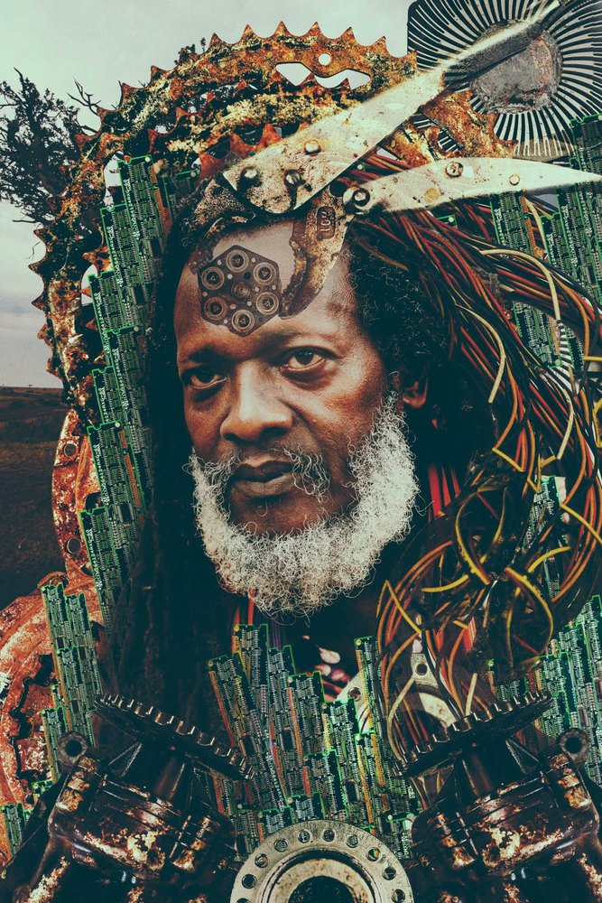
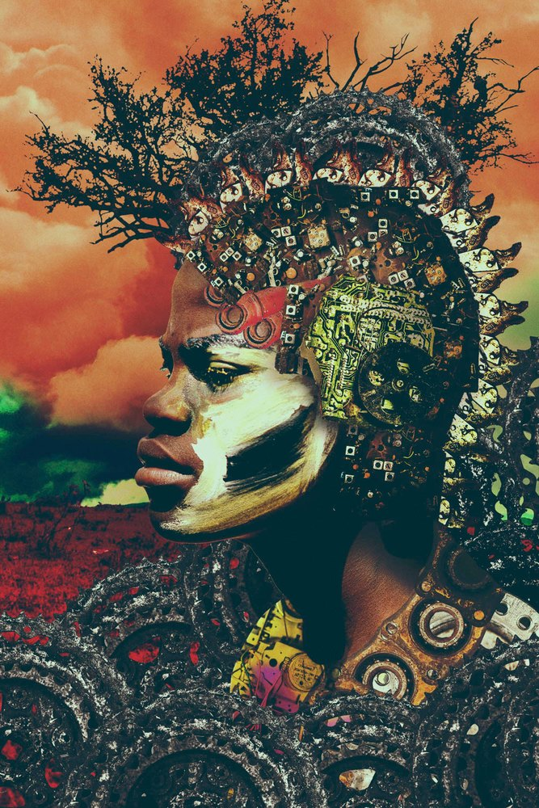
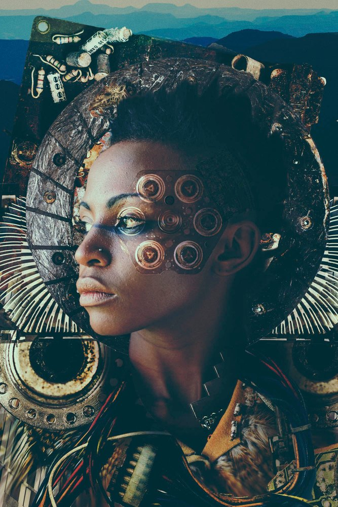
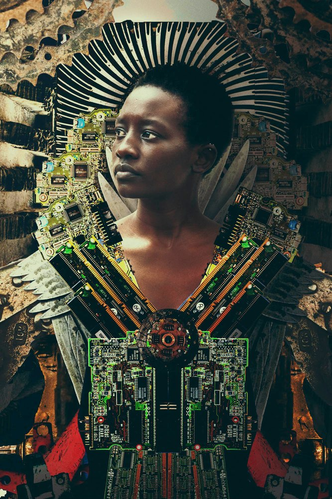

Shown at Øksnehallen
Tahir Carl Karmali
Digital composites built from found objects, between photography and installation.

Tahir Carl Karmali was born in Kenya in 1987 and is based in Nairobi. He began as a painter, and took up the camera while he travelled and worked in Asia and Europe, first as a food and travel photographer.
As an artist at the Kuona Trust in Nairobi he turned to conceptual work for photography and installation, building digital composites from found objects into surreal images.
Text and series line are draft. The works are shown at 1,500 px; the masters (about 220 MB each) can replace them. Website from his own profile (2014), to confirm.
Jua Kali
Begun in 2014: portraits of creative workers in Nairobi’s informal economy, the jua kali, among them dancers, writers, designers and sculptors. Each sitter was photographed outdoors in daylight, and each portrait is built up into a collage of objects Karmali gathered at dump sites and recycling yards. The series asks whether the informal economy is the real power of the city.



